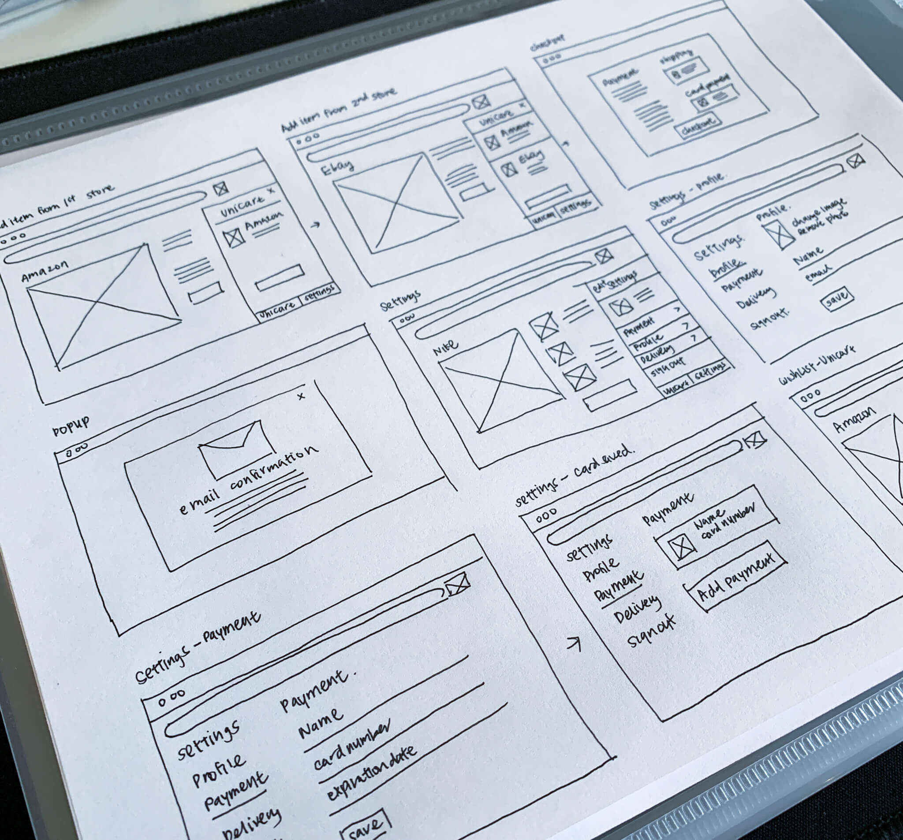
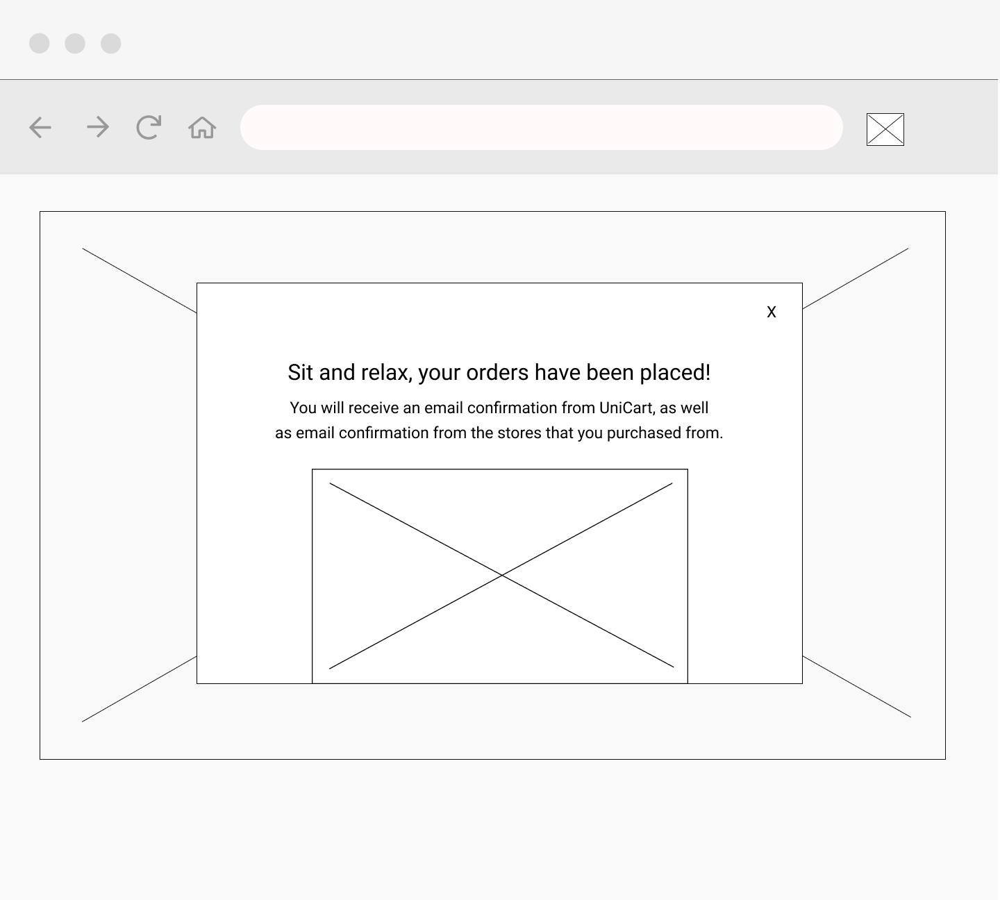
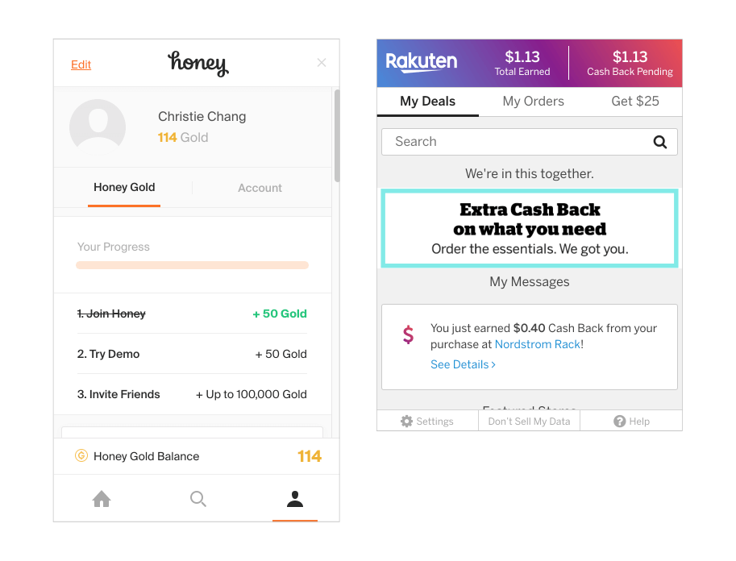
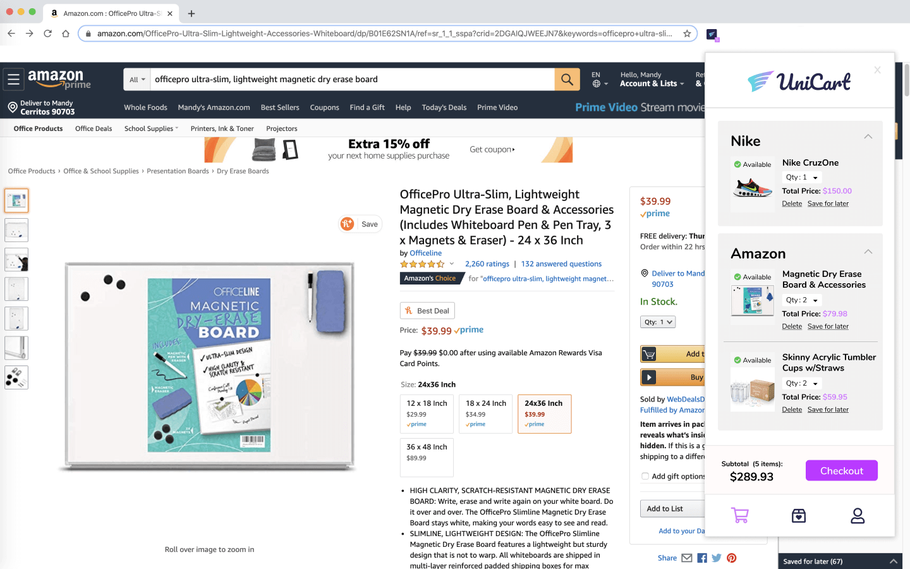

UniCart
UniCart is a browser extension tool that makes shopping a one step checkout process.
View UniCart PrototypeUniCart is a browser extension tool that makes shopping a one step checkout process.
View UniCart PrototypeWith the internet being easily accessed, I noticed that more shoppers started to make online purchases. It was easy for users to conveniently open up multiple browser tabs to different retail stores at one time. However, I wanted to explore ways in which a user can have an easier check out process without having to resubmit their information over and over again.
UX Designer
Research, Information Architecture,
Interaction, Visual design & testing
Jan 2020 - Mar 2020
With the e-commerce platform growing, I noticed that most shoppers were transitioning into online shoppers. With how easy and convenient online shopping is, it only takes one click to open multiple browser tabs to different retail stores. However, is there a simpler way for shoppers to check out their carts without having to resubmit the same information over and over again?
Browser Extension Tool: the tool is non-intrusive and can be accessed easily from the shopper. With each item added to a cart from a retail story, UniCart populates the same exact items into its own cart.
One Step Checkout: Once shoppers store their payment, shipping, and billing information into UniCart, UniCart uses the information to charge all retail website stores all at once.
Wishlist: UniCart tells users the availability of an item. If items are out of stock, users can choose to save the item into their wishlist.
I started the project off by learning more about my user’s experiences with online shopping and browser extensions. Understanding a user’s behavior would help me have a clearer idea of the features that I needed to include in UniCart.
I created a user survey to obtain quantitative data of my users. From the survey results, 71% of users preferred shopping online versus in person, and that during their browsing sessions, usually 3 to 7 tabs are opened at a time. When it came to browser management, users said that they removed tabs as they browsed. The reason why users chose to shop online versus in person is because online shopping is convenient, websites are available all the time, and there’s an easy checkout process.
Apart from the positives of online shopping, I was also curious about the negatives of online shopping. Users complained that the quality of their items were not up to part with their expectations, and others complained about the checkout process and returns. This inspired me to look into solutions that could help simplify the checkout process for my users.
The next section of the survey was to understand user experiences with browser extensions. On a scale of 1-10, participants were asked to rate how important browser extension tools were to them. 47% of users gave browser extensions a six. From these experiences, I wanted users to speak about their positives and negatives with these tools.
“AdBlocker makes my entire online experience more enjoyable...”
“...the same/worse discounts that were already offered”.
The next step was to create user personas that would serve as my potential audience for UniCart.
Motivation
Mia doesn’t shop much. The only time she does is when she sees email/instagram ads with deals, or when her family sends over links in their group chat. Mia likes to shop at the comforts of her home, but dislikes how sizes for clothing sites are not consistent. When shopping online, Mia likes to delete tabs as she shops. When she visits her favorite online stores, she wishes that her contact, shipping, and payment information is all saved, so that she can do a quick checkout.
Frustration
Having to fill out information over and over again, information is hard to read during checkout, sizing and quality of products are not accurate.
Motivation
Oliver loves to window shop online. He doesn’t particularly enjoy shopping in-person because there are never things that he actually needs. He enjoys shopping at his own time and pace. Oliver is all about costs, so he only makes a purchase when he knows that it is the best deal he can get. Sometimes it will take Oliver a day or two to fully commit to purchasing an item.
Frustration
When products are no longer in stock during checkout, purchasing an item and finding a better price elsewhere.
After doing user research, I went onto doing market research. The three competitors that I looked into were Honey, Adblock, and CamelCamelCamel.
Honey: Honey is an online coupon extension that works on both desktop and mobile. It helps users find and apply coupon codes to users when they are ready to check out. They have a simple and clean and makes it easy for users to navigate around. However, Honey’s mobile application doesn’t provide the same experiences that their browser extension does. Therefore, most users avoid using the mobile application.
AdBlock: AdBlock focuses on providing a worry and distraction free internet experience for their users. It is free to download and works on multiple devices. However, AdBlock doesn’t necessarily block all ads. For a fee, AdBlock will allow certain third party ads to be shown. Also some websites have now made it possible to deny users access to their website if they have their AdBlock on.
CamelCamelCamel: CamelCamelCamel provides data to users on the price history of their products. They provide user’s information on the best time to buy products. However, they only track the prices of products that are sold on Amazon, and don't directly link users to third party sites to access cheaper products. It has a poorly designed landing page that may have users think that their website is not a credible source.
After understanding my users and marketspace, it was time to create user stories and flows. The user stories helped me prioritize main features that would be included in UniCart.
These user flows established a direction to begin sketching out how these screens would look like. I sketched out different layouts and redrew the best ones into FIgma.
The wireframe mock-ups provided a clearer vision of how users would engage within UniCart. Due to UniCart being a browser extension, I explored moments in which UniCart would only take a partial of the screen versus a full screen.
When coming up with UniCart's name, I wanted the name to accurately reflect what the browser extension tool does. "Uni" as one and "Cart" as what the tool does. Together UniCart means "one cart", as in the only cart a shopper would need with making their shopping purchases.
I wanted users to approach UniCart as a tool that is useful but also fun. Shopping should never seem as a chore. I liked how "Uni" had word similarities with the word unicorn. I wanted users to experience a one of a kind shopping assistant tool that has never been seen. With the first initial mockups of the logo design, I wanted to create a hybrid visual of unicorns and carts. However, as I continued to flush out these ideas, I realized that the logo design began to appear too child-like. I decided to go away with merging the two, and wanted to target my attention to a unicorn attribute. I focused my designs arround wings. I believed it to be a good icon that reflected the uniqueness of the tool, but also how fast and easy it was to make your online purchase.
The color palette of UniCart was highly influenced by the icon of the wing. I wanted the brand to look and feel whimsical. I began by looking up visuals of unicorns and stumbled upon a lot of purple, pink, blue, and rainbow gradients. I moved forward with having UniCart’s color palette feature a purple accent. I liked that purple is viewed as a color of rarity and thus considered a color that only royals wore. The idea that purple was not often seen in nature made it seem perfect for a product that had unicorn-esque attributes.
The idea behind the first draft of the high fidelity mock-up was to incorporate stock photo images of work spaces and young working professionals. As stated above in the branding, I used green as an accent color, and incorporated warmer/neutral tones to help balance out the whitespace on the screens. As I added this style throughout the rest of the product, I wanted to do a quick preference testing to see how users felt on some particular screens that I was curious about. I tested out two different color variations, layout, and button placement.
With the branding complete, I was able to start working on my first set of high fidelity mockups. The idea behind the first draft of the high fidelity mock-up was to give an accurate representation of how UniCart would be used from downloading it on the Google Store to the tool being used with different retail browser stores.
Some of the challenges in creating the first mockup was figuring out when I would obtain information on the user. The nature of browser extension tools are that they could be used automatically once a user downloads them, therefore there is no actual onboarding process. I looked at competitors to see how they were able to gather information from users. For Honey, they have a reward system called Honey gold that gives users gift cards for being an account holder. Rakuten works the same way, in that account users are able to earn cash back in the form of a check.
From these competitors, I was able to design a screen called profile that would be where users placed their shipping and payment methods. In order to protect the privacy of users, I required them to create an account with UniCart.
I wanted users to approach UniCart as a tool that is useful but also fun. Shopping should never seem as a chore. I liked how "Uni" had word similarities with the word unicorn. I wanted users to experience a one of a kind shopping assistant tool that has never been seen. With the first initial mockups of the logo design, I wanted to create a hybrid visual of unicorns and carts. However, as I continued to flush out these ideas, I realized that the logo design began to appear too child-like. I decided to go away with merging the two, and wanted to target my attention to a unicorn attribute. I focused my designs arround wings. I believed it to be a good icon that reflected the uniqueness of the tool, but also how fast and easy it was to make your online purchase.
The color palette of UniCart was highly influenced by the icon of the wing. I wanted the brand to look and feel whimsical. I began by looking up visuals of unicorns and stumbled upon a lot of purple, pink, blue, and rainbow gradients. I moved forward with having UniCart’s color palette feature a purple accent. I liked that purple is viewed as a color of rarity and thus considered a color that only royals wore. The idea that purple was not often seen in nature made it seem perfect for a product that had unicorn-esque attributes.
The idea behind the first draft of the high fidelity mock-up was to incorporate stock photo images of work spaces and young working professionals. As stated above in the branding, I used green as an accent color, and incorporated warmer/neutral tones to help balance out the whitespace on the screens. As I added this style throughout the rest of the product, I wanted to do a quick preference testing to see how users felt on some particular screens that I was curious about. I tested out two different color variations, layout, and button placement.
What color do you prefer? 83% of users chose the second design.


Where do you prefer button placement? 84% of users chose the first design.


What layout do you prefer? 67% of users chose the first design.


From the preference test, there was an overwhelming number of users that prefered the dark blue color theme for the dashboard. This would be a huge change in look from the first high-fidelity mock-up and the second. I also made some changes to some of the onboarding screens that were tested out.


I decided to do a second round of testing in order to add the changes done from my preference testing. The results of this testing would lead to big changes from V2 to my final design look.
A number of users had complained that the “My Files” tab and “Collaboration” tab were too similar in look and functionality to one another.


The only key difference the screens had was the ability to view notes and screen share for collaborative projects. I originally thought collaboration should be a separate tab in itself because it was a highly sought out feature from my user surveys. However, it was such a minor difference of functionality between the two, so I decided to combine the “Collaborate” tab into the “My Files” tab. All files that are shared will be allowed the feature to share notes and screen share.
Settings was difficult to find.

Users didn’t seem to notice that the profile image would have a drop down to access settings. Since I had some extra real estate on my left menu bar, I decided to add a tab that featured “Settings”. This way users had two ways in accessing “Settings”.
Branding of the website was not aligned with the product.

The user said unicart didn’t quite match the look and feel of the website landing page. She wanted to see more clear/layered effects that would match the style of the logo. When this was brought to my attention, I looked into creating a more transparent platform for my users in which they could feel comfortable working in. I created a feature within settings that would allow users to customize their workspace. The side menu bar can be changed based on where ever the remote professional was at.
I believe that I identified a great target audience for the product. I was able to identify patterns in how more jobs are becoming remote. I used my observations as an advantage to finding my audience.
In considering future developments of the current product, I want to send out surveys targeting remote work professionals. From the surveys, I’m hoping to create more features that are geared towards my specific audience. I liked how I used my personal experiences as a freelancer to help my drive unicart’s branding. In the next steps of design, I’d like to place my focus in having the product be more malleable to the user.
I believe these goals listed above can be achieved through user research, ideation, prototyping, wireframing and usability testings.